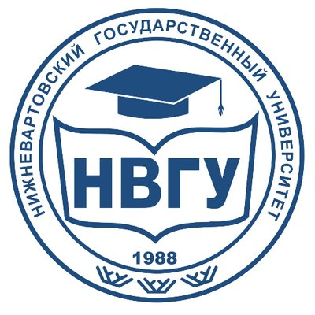

Здравствуйте! вы попали на сайт начинающего верстальщика. Расскажу о себе:
Меня зовут Мария. Я учусь на 3 курсе Нижневартовского государственного университета. Специальность "Информатика и вычислительная техника". Как раз сейчас я расскажу про мой ВУЗ.
НВГУ
История НВГУ началась еще в далеком 1988 году, когда был открыт филиал Тобольского госудаственного педагогического института им. Д. И. Менделеева. Филиал включал в себя три факультета: физико-математический; филологический и педагогический.
В 1992 году Нижневартовский государственный педагогический институт одним из первых в России перешел на двухступенчатую подготовку педагогических кадров совместно с Нижневартовским педагогическим училищем (колледжем) в структуре учебно-научного педагогического комплекса
В 1992 году Нижневартовский филиал ТГПИ им. Д. И. Менделеева преобразован в Нижневартовский педагогический институт.
В 2005 году институт был переименован в Нижневартовский государственный гуманитарный университет, а в 2013 году переименован в Нижневартовский государственный университет.
На 2015 год в университете 9 факультетов, 22 кафедры, 14 научно-исследовательских лабораторий, 3 студенческих конструкторских бюро, аспирантура. Здесь обучаются более 5000 студентов.
Информацию взяла на сайте wikipedia.
Моя группа
О своей группе расскажу в картинках с милыми котиками!
Моя будущая профессия
Скорее всего буду работать программистом или системным администратором. Возможно буду прикладным специалистом, системным программистом или web-программистом. Узнаем.
Мои увлечения
- Плавание
- Студенческие отряды (РСО)
- Учиться